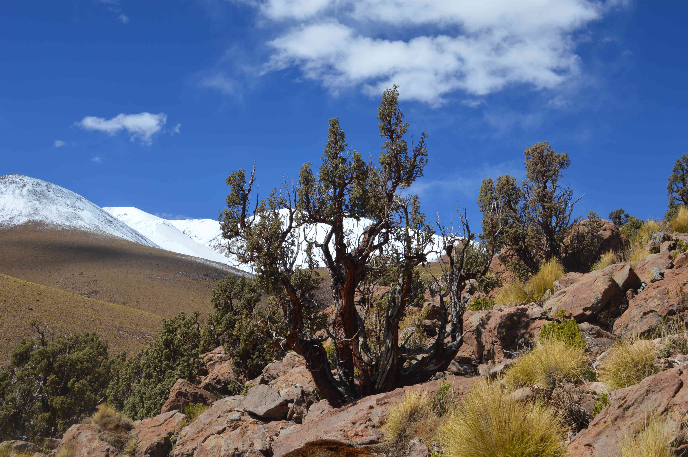

Research Highlights

Way up high
I am investigating the potential of Polylepis tarapacana tree-ring isotopes as records of climate changes in the South American Altiplano

Forest decline and extreme droughts
One of the most severe droughts in Patagonia triggered reduced growth and Forest decline in native Nothofagus pumilio forest.
Peer-Reviewed Publications
- [2021] Marcotti, E., Amoroso, M.M., Rodriguez-Caton, M., Vega, L., Srur, A.M., Villalba, R. Growth resilience of Austrocedrus chilensis to drought along a precipitation gradient in Patagonia, Argentina. Forest Ecology and Management.
- [2021] Rodriguez-Caton, M., Andreu-Hayles, L., Morales, M.S., Daux, V., Christie, D.A., Coopman, R.E., Alvarez, C., Rao, M.P., Aliste, D., Flores, F., Villalba, R. Different climate sensitivity for radial growth, but uniform for tree-ring stable isotopes along an aridity gradient in Polylepis tarapacana, the world’s highest elevation tree-species. Tree Physiology. doi.org/10.1093/treephys/tpab021.
- [2020] Morales, M.S, Cook, E.R., Barichivich, J., Christie, D.A., Villalba, R., LeQuesne, C., Srur, A.M., Ferrero, M.E., Gonzalez-Reyes, A., Couvreux, F., Matskovsky, V., Aravena, J.C., Lara, A., Mundo, I.A., Rojas, F., Prieto, M.R., Smerdon, J.E., Bianchi, L.O., Masiokas, M.H., Urrutia, R., Muñoz, A.A., Rodriguez-Caton, M., Rojas-Badilla, M., Alvarez, C., Lopez, L., Luckman, B., Lister, D., Harris, I., Jones, P.D., Williams, A.P., Velazquez, G., Aliste, D., Aguilera-Betti, I., Marcotti, E., Flores, F., Muñoz, T., Cuq, E., Boninsegna, J.A. 600 years of South American tree rings reveal more widespread droughts since the mid-20th century. PNAS
- [2020] Srur, A.M., Amoroso, M.M., Mundo, I., Morales, M.S., Rodriguez-Caton, M., Aschero, V., Villalba, R. Forest Dynamics in the Argentinean Patagonian Andes: Lessons Learned from Dendroecology. In Latin American Dendroecology - Combining tree-ring sciences and ecology in a mega diverse territory. Eds. Pompa-Garcia, M., Camarero, J.J. Springer. 171-201.
- [2020] Guerrido, C.M., Villalba, R., Amoroso, M.M., Rodriguez-Caton, M.. Patterns of tree establishment following glacier-induced floods in southern Patagonia. In Latin American Dendroecology - Combining tree-ring sciences and ecology in a mega diverse territory. Eds. Pompa-Garcia, M., Camarero, J.J. Springer. 225-246.
- [2020] Albiero Junior, A., Venegas-González, A., Rodriguez-Caton, M., Oliveira, J.M., Longhi-Santos, T., Galvão, F., Temponi, L.G., Botosso, P.C. Edge Effects Modify the Growth Dynamics and Climate Sensitivity of Araucaria angustifolia Trees. Tree-ring Research, 76(1):11-26.
- [2019] Rodriguez-Caton, M., Villalba, R., Srur, A.M., Williams, A.P. Radial growth patterns associated with tree mortality in Nothofagus pumilio forest. Forests, 10:489.
- [2019] Lopez Callejas, L., Rodriguez-Caton, M., Villalba, R. Convergence in growth responses of tropical trees to climate driven by water stress. Ecography, 42(11):1899-1912.
- [2019] Kowaljow, E. Morales, M.S., Whitworth-Hulse, J.I., Zeballos, S.R., Giorgis, M.A., Rodriguez-Caton, M., M. Gurvich, D.E. A 55-year-old natural experiment gives evidence of the effects of changes in fire frequency on ecosystem properties in a seasonal subtropical dry forest. Land Degradation & Development , 30:266–277.
- [2018] Rodriguez-Caton, M., Villalba, R. Indicadores del decaimiento forestal en bosques de Nothofagus pumilio en el norte de la Patagonia argentina. Madera y Bosque, 24:2.
- [2018] Srur, A.M, Villalba, R., Rodriguez-Caton, M., Amoroso, M.M, Marcotti, E. Climate and Nothofagus pumilio establishment at upper treelines in the patagonian andes. Frontiers in Earth Science, 6:1-11.
- [2018] Amoroso, M., Speer, J., Daniels L., Villalba, R. Cook, E,... Rodriguez-Caton, M., Soto, P., Young, A. South american dendrochronological fieldweek 2016: Exploring dendrochronological research in northern Patagonia. Tree-Ring Research, 74(1):120-131.
- [2017] Pompa-García, M., González-Cásares, M, Acosta-Hernández, A.C., Camarero, J.J., Rodriguez-Caton, M.. Drought Influence over Radial Growth of Mexican Conifers Inhabiting Mesic and Xeric Sites. Forests, 8: 1-13.
- [2017] Amoroso, M., Rodriguez-Caton, M., Villalba, R., Daniels, L. Forest decline in northern Patagonia: the role of climatic variability. In Dendroecology: Tree-ring analyses applied to ecological studies. Eds Amoroso, M., Daniels, L., Baker P., Camarero, J.J. Springer. 325-342.
- [2016] Rodriguez-Caton, M., Villalba, R., Morales, M.; Srur, A.M. Influence of droughts on Nothofagus pumilio forest decline across northern Patagonia, Argentina. Ecosphere, 7:1-17.
- [2016] Srur, A.M, Villalba, R., Rodriguez-Caton, M., Amoroso, M.M, Marcotti, E. Establishment of Nothofagus pumilio at Upper Treelines Across a Precipitation Gradient in the Northern Patagonian Andes. Arctic, Antarctic, and Alpine Research, 48(4):755-766.
- [2015] Rodriguez-Caton, M., Villalba, R., Srur, A.M., Luckman, B. Long-term trends in radial growth associated with Nothofagus pumilio forest decline in Patagonia: Integrating local- into regional-scale patterns. Forest Ecology and Management, 339:44-56.